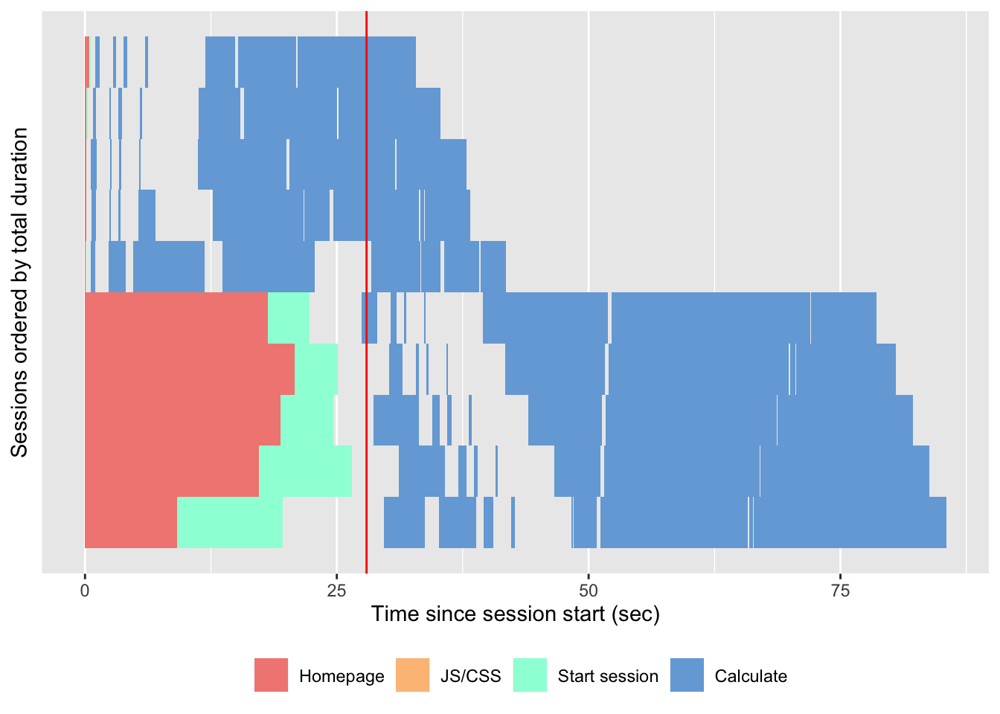

Chapter 12 Build yourself a safety net
“Don’t fuck over Future You”
Strengthening your app means two things: testing, and locking the application environment.
12.1 Testing your app
The process of getting your application production-ready implies that the application is tested. With a robust testing suite, you will develop, maintain, and improve in a safe environment and ensure your project sustainability. What will you be testing? Both sides of the application: the business logic and the user interface. And also, the application load, i.e how much time and memory is required when your application starts being used by a significant amount of users, be it from the user perspective (how many time does it take to complete a full scenario) and from the server perspective (how many memory is needed for my app to run).
12.1.1 Testing the business logic
If you have been following the good practices we have listed in previous chapters, your current application has at least these two properties:
- The business-logic functions are separated from your interactive-logic functions.
- Your application is inside a package.
On top of being a sane organization approach, using this separation inside a package structure allows to leverage all the tooling that has been built for testing “standard” packages.
R developers have been developing packages for a long time, and at the time of writing these lines (April 2020), more than 15,000 packages are available on CRAN. To sustain these developments, a lot of tools have been created to secure the development process, and especially tools for creating unit tests for your package.
Unit tests are a general concept in software engineering that describes the process of writing a form of assessment to check the validity of your code.
A simplified explanation is that if you write a function call meaning_of_life that returns 42, you will expect this function to always return 42, and to be alerted if ever this value changes.
Using unit tests is a way to secure your work in the future, be it for future you, for your collaborator, or for anybody wanting to collaborate to the project: if anyone comes and change the code behind the meaning_of_life() function, and the result is no longer 42, the developer working on this piece of code will be able to catch it.
The general idea is to detect bugs and breaking changes at the moment they are happening, not once it is too late.
There are several packages in R that can be used to implement unit testing, and you can even implement your own tests.
One of the most popular right now33 is {testthat} (???)..
This testing framework lets you write a series of tests and expectations, which are then launch when calling devtools::test(), either locally or in you CI system.
Here is an example of testing that the meaning_of_life will always be 42.
Once you have this test skeleton set, you will be able to detect any change to this function.
If you want to learn more about how to use {testthat}, you can refer to the following resources:
12.1.2 Testing the interactive logic
Once you have built a solid test suite for your business logic, another side of your app you might want to check is the interactive logic, i.e. the user interface.
There are several tools from the web developer world that can be used to do exactly that: mimicking an interactive session where instead of deliberately clicking on the application interface, you let a program do it for you.
12.1.2.1 puppeteer
puppeteer is a NodeJS module that drives a Google Chrome headless session and mimic a session on the app.
And good news, there is a Google Chrome extension, called Puppeteer Recorder, that allows you to create, while visiting a webpage, the pupepeteer script to reproduce your visit.
Here is, for example, a very small script for testing {hexmake}, generated by this extension.
const puppeteer = require('puppeteer');
(async () => {
const browser = await puppeteer.launch()
const page = await browser.newPage()
await page.goto('http://localhost:2811/')
await page.setViewport({ width: 1440, height: 766 })
await page.waitForSelector('.row > .col > .rounded > details:nth-child(3) > summary')
await page.click('.row > .col > .rounded > details:nth-child(3) > summary')
await page.waitForSelector('.innerrounded #main_ui_1-left_ui_1-pkg_name_ui_1-package')
await page.click('.innerrounded #main_ui_1-left_ui_1-pkg_name_ui_1-package')
await browser.close()
})()Be aware though that this extension does not record everything, at least with the version used while writing this book (0.7.1).
For example, typing inside a text input is not recorded: that is completely doable inside puppeteer, yet not recorded by this extension34.
Once you have this piece of code, put it into a NodeJS script, and replay the session as many time as you need. If ever one of the steps can not be replayed as recorded, the script will fail, notifying you of a regression.
Several packages in R mimic what puppeteer does (Google Chrome headless orchestration),with notably {crrri} (???) and {chromote} (???).
These packages can be used to launch and manipulate a Google Chrome headless session, meaning that you can programmatically navigate and interact with a webpage from R.
And to do the tests in a puppeteer spirit, you can refer to the {crrry} package (???), which contains a series of wrapper functions around {crrri}, specifically designed for Shiny.
Here is an example:
test <- crrry::CrrryOnPage$new(
chrome_bin = pagedown::find_chrome(),
chrome_port = httpuv::randomPort(), # Note that you will need httpuv >= 1.5.2
url = "https://connect.thinkr.fr/hexmake/",
inspect = FALSE,
headless = TRUE
)
test$wait_for_shiny_ready()You can then call one of the test object methods:
call_js(), that allows you to run JavaScript codeshiny_set_input()changes the value of a Shiny Inputwait_for()waits for a JavaScript condition to be TRUEclick_on_idclicks on a given id
Of course, the interesting part is doing “bulk testing” of your application, for example by setting a series of values to an input:
And once your test is done, do not forget to close the connection!
12.1.2.2 Monkey test
If you are working on a user-facing software (i.e a software used by external users), there is one rule to live by: every unexpected behavior that can happen, will happen. In other words, if you develop and think “a user will never do that”, just expect a user to eventually do “that”.
But how can we get prepared for the unexpected? How can we test the “crazy behavior” that user will adopt? In web development, there exists a methodology called “Monkey testing”, which consists of launching a series of random event on a webpage: random text in input, scrolling, clicking, zooming… and see if the application crashes or not. This software testing method allows to test the robustness of the application, by seeing how much it can handle unexpected behavior.
Several JavaScript libraries exist when it comes to monkey testing, one of the most popular (and easy to use) library is called gremlin.js.
This library is particularly interesting when it comes to Shiny as it does not need external installation: you can add the library as a bookmark on your browser, navigate to the application, and launch the testing (click on the “Generate Bookmarklet” link on the top of the README).

FIGURE 12.1: Example of using gremlins.js on the “prenoms” Shiny application.
And if you want to scale this, you can also combine it with {shinyloadtest} (Dipert, Schloerke, and Borges 2020): launch a session recording, run gremlins one or several time inside the recording, then replay it with multiple sessions.
With {crrry}, this gremlins test comes for free:
12.1.2.3 {shinytest}
Finally, if you prefer a Shiny specific package, you can go for {shinytest}.
This package, created and maintained by RStudio, allows you to do a series of screenshots of your application, and then replays your app and compare the previously taken screenshots to the current state of your application, allowing you to detect any changes in the interface.
If you are building your application with {golem}, you will need to add an app.R file at the root of your package, then run shinytest::recordTest():
Once this function is run, a new window opens: it contains your app, and a “Screenshot” button on the right. Using this button, you can take various recording of your shiny application at different states.
Then, you can do some changes in your app, and run:
If the {shinytest} package detects a visual change in the application, you will be immediately alerted, with a report of the difference from the snapshots you took and the current state of the application.
12.1.3 Testing the app load
12.1.3.1 {shinyloadtest}
{shinyloadtest} tests how an application behaves when one, two, three, twenty, one hundred users connect to the app, and gives you a visual report about the connection and response time of each session.
The idea with {shinyloadtest} is to first record a session where you mimic a user behavior, then shinycannon, a command line tool coming with {shinyloadtest}, replays the recording several times.
Once the session has been replayed several times mimicking the session you have recorded, you have access to a report of the behavior of your app.
# Starting your app in another process
p <- processx::process$new(
"Rscript", c("-e", "options('shiny.port'= 2811);hexmake::run_app()")
)
# Check that the process is alive
Sys.sleep(5) # We wait for the app to be ready
p$is_alive()
browseURL("http:://localhost:2811")Record the tests, potentially in a new dir:
fs::dir_create("shinylogs")
withr::with_dir(
"shinylogs", {
shinyloadtest::record_session("http://localhost:2811", port = 1234)
}
)We now have a series of one or more recording(s) inside the shinylogs/ folder:
Then, let’s switch to our command line, and rerun the session with shinycannon.
The shinycannon command line tools take several argument: the path the .log file, the URL of the app, --workers specify the number of concurrent connections to run, and the --output-dir argument specifies where the report should be written.
Then, go to your terminal and run:
And now, we have new files inside the folder, corresponding to the session recordings.
[01;34mshinylogs[0m
├── dockerstats.csv
├── recording.log
└── [01;34mrun1[0mGood news: we do not have to manually analyze these files—{shinyloadtest} offers a series of wrapper functions to do that.
Warning: `as.tibble()` is deprecated as of tibble 2.0.0.
Please use `as_tibble()` instead.
The signature and semantics have changed, see `?as_tibble`.
[90mThis warning is displayed once every 8 hours.[39m
[90mCall `lifecycle::last_warnings()` to see where this warning was generated.[39mWe now have a data.frame with
Rows: 550
Columns: 13
$ run [3m[90m<ord>[39m[23m 5 workers, 5 workers, 5 wo…
$ session_id [3m[90m<int>[39m[23m 0, 0, 0, 0, 0, 0, 0, 0, 0,…
$ user_id [3m[90m<int>[39m[23m 0, 0, 0, 0, 0, 0, 0, 0, 0,…
$ iteration [3m[90m<int>[39m[23m 0, 0, 0, 0, 0, 0, 0, 0, 0,…
$ input_line_number [3m[90m<int>[39m[23m 4, 5, 6, 8, 9, 11, 14, 15,…
$ event [3m[90m<chr>[39m[23m "REQ_HOME", "WS_OPEN", "WS…
$ start [3m[90m<dbl>[39m[23m 0.000, 0.462, 0.539, 1.025…
$ end [3m[90m<dbl>[39m[23m 0.461, 0.539, 0.542, 1.219…
$ time [3m[90m<dbl>[39m[23m 0.461, 0.077, 0.003, 0.194…
$ concurrency [3m[90m<dbl>[39m[23m 0.0, 1.0, 1.0, 1.0, 1.0, 1…
$ maintenance [3m[90m<lgl>[39m[23m TRUE, TRUE, TRUE, TRUE, TR…
$ label [3m[90m<ord>[39m[23m "Event 1) Get: Homepage", …
$ json [3m[90m<list>[39m[23m [["REQ_HOME", 2020-04-10 …Then, {shinyloadtest} comes with a series of plotting functions that can be used to analyse your recording.
Here are some examples:
slt_session_duration()plots the session duration, with the various types of event that takes computation time: JS and CSS load, R computation…

slt_waterfall()plots the waterfall graph of session durations, ordered by events.

And if you need to bundle everything into an HTML reports, shinyloadtest_report() is what you are looking for.
So, to sum up with a step by step guide:
If the shiny app is only available on your machine, launch a process with
{processx}, or in another R session, that launches the application. You can either set the port withoptions('shiny.port'= 2811), or let shiny decide for you. Be sure that the process is running. If the app is online, use the online url (and make sure you have access to the app).Run
shinyloadtest::record_session(url). You should probably set a different port for{shinyloadtest}, so that it does not try to connect on port 80.Play around with your app, record a scenario of usage
Close the tab where the app is running.
Return to your terminal, and run the
shinycannoncommand line toolWait for the process to be terminated
Go back to R, and then you can analyse the data from the recordings, either manually or by generating the html report
12.1.3.2 {shinyloadtest}, {crrry}, and {dockerstats}
Another thing you might want to monitor is the memory/CPU usage of your application, which {shinyloadtest} does not natively provide: the package records the load from the browser point of view, not from the server one.
That’s where {dockerstats} (Fay 2020) can come into play: this package is a wrapper around the command line docker stats, and returns an R data.frame with the stats.
You can get the {dockerstats} package from GitHub with:
With these stats, we can monitor the load on the app when it is run in a docker container.
Let’s say now we want the stats for the hexmake container:
Of course, right now nobody is using the app, so the usage can be pretty small. But let’s push it a little bit an mimic a lot of connections.
To do that, we can replay our shinycannon call, with at the same time using the dockerstats_recurse() function, that will recursively call dockerstats() on a regular interval.
Let’s launch at the same time a dockerstats_recurse()
For example, here, we will print, on each loop, the MemUsage of the container, then saving the data inside a dockerstats.csv file.
dockerstats_recurse(
"hexmake",
callback = function(res){
print(
paste("Mem usage: ", res$MemUsage)
)
write.table(
res,
"dockerstats.csv",
append = TRUE,
col.names = FALSE,
row.names = FALSE,
sep = ","
)
}
)Here is what both these processes look side to side:

FIGURE 12.2: {dockerstats} and shinycannon running side-by-side at the same time.
As you can see, as the number of connections grow, the memory usage grows.
And we now have a csv with the evolution of the docker stats records over time!
Rows: 136
Columns: 14
$ Container [3m[90m<chr>[39m[23m "hexmake", "hexmake", "hexmake",…
$ Name [3m[90m<chr>[39m[23m "hexmake", "hexmake", "hexmake",…
$ ID [3m[90m<chr>[39m[23m "b5d337941e310cbf4708b95a9cc7556…
$ CPUPerc [3m[90m<dbl>[39m[23m 0.09, 15.07, 38.58, 54.94, 20.28…
$ MemUsage [3m[90m<chr>[39m[23m "110.9MiB", "117.2MiB", "168.3Mi…
$ MemLimit [3m[90m<chr>[39m[23m "1.943GiB", "1.943GiB", "1.943Gi…
$ MemPerc [3m[90m<dbl>[39m[23m 5.57, 5.89, 8.46, 8.73, 8.74, 8.…
$ NetI [3m[90m<chr>[39m[23m "586B", "8.37kB", "31.6kB", "62.…
$ NetO [3m[90m<chr>[39m[23m "0B", "433kB", "1.18MB", "2.48MB…
$ BlockI [3m[90m<chr>[39m[23m "0B", "0B", "0B", "0B", "0B", "0…
$ BlockO [3m[90m<chr>[39m[23m "0B", "0B", "0B", "0B", "0B", "0…
$ PIDs [3m[90m<int>[39m[23m 3, 4, 4, 4, 4, 4, 4, 4, 4, 4, 4,…
$ record_time [3m[90m<dttm>[39m[23m 2020-04-10 10:39:20, 2020-04-10…
$ extra [3m[90m<lgl>[39m[23m NA, NA, NA, NA, NA, NA, NA, NA, …If you need a deeper look into the connection between application actions and the docker stats, you can also combine {dockerstats} with {crrry}, the idea being that you can record the CPU usage at the exact moment the application performs a specific computation.
Let’s record the computation of the hexmake container containing the same app as before.
system(
"docker run -p 2708:80 --rm --name hexmake2 -d colinfay/hexmake",
wait = FALSE
)
Sys.sleep(5) # Let's leave some time for the container to be ready
test <- crrry::CrrryOnPage$new(
chrome_bin = pagedown::find_chrome(),
chrome_port = httpuv::randomPort(),
url ="http://localhost:2708",
inspect = FALSE,
headless = TRUE
)
test$wait_for_shiny_ready()
results <- dockerstats::dockerstats("hexmake2", extra = "launch")
for (i in letters[1:10]){
test$shiny_set_input(
"main_ui_1-left_ui_1-pkg_name_ui_1-package",
i
)
results <- rbind(
results,
dockerstats::dockerstats("hexmake2", extra = i)
)
}
system("docker kill hexmake2")And draw a small graph of this evolution:
library(dplyr, warn.conflicts = FALSE)
results <- results %>%
mutate(
MemUsage = to_mib(MemUsage),
record_time = as.POSIXct(record_time)
)
library(ggplot2)
ggplot(data = results, aes(x = record_time)) +
geom_line(aes(y = MemUsage)) +
scale_y_continuous(labels = scales::label_bytes(units = "MiB")) +
geom_vline(aes(xintercept = record_time)) +
geom_label(aes(y = max(MemUsage), label = extra)) +
labs(
title = "MemUsage of setting ten inputs for package name in {hexmake}"
)12.2 A reproducible environment
One of the challenges of building an app that needs to be sent to production is that you will need to work in a reproducible environment.
What does this mean?
That you are building an application that is to be deployed in another computer (be it a server or another R user’s computer).
Once your app is built, there are few chances that you will launch it on your own computer and that external user will connect to your computer.
What will happen is that you will either give your users a package (which will be the simplest way to share it: bundle the packaged app to a tar.gz, then let people install it either manually or from a package repository), or a URL where they can connect and use your app.
If you follow the {golem} workflow and all the good practices for a solid package, the application you have built should be deployable on another computer that has R.
In that second case, you will have to think about how you can create your app in a reproducible environment: in other words, be sure that the app is deployed under the same configuration as your local application—R version, package versions, system requirements, environment variables…
To help you achieve that,, we will introduce two tools in the next section: {renv} (???), and Docker.
12.2.1 {renv}
12.2.1.1 About {renv}
How do we make sure the package versions we have installed on our machine stays the same in the production environment? And also, how can we be sure that, working as a team, we will be able to work together using the same package versions?
From one version to another, functions and behaviors change. Most of the time, new version means new functions, and new features. But from time to time, a new version means breaking changes. Catching that these new versions cause breaking changes can be hard: either because we do not realize that the version is different, or because debugging the error is difficult, especially in Shiny where the trace-back is very deep. And of course, the moment when we discover the error might not be the perfect time for us, as we might not have enough free time on our calendar to debug the application which has stopped running…
For example, here is an error from a real life error when pushing an app on a shiny-server:
root@westeros-vm:/var/log/shiny-server# cat thewall(...).log
*** caught segfault ***
[...]
address 0x5100004d, cause 'memory not mapped'
Traceback:
1: rcpp_sf_to_geojson(sf, digits, factors_as_string)
2: sf_geojson.sf(data)
3: geojsonsf::sf_geojson(data)
4: addGlifyPolygons(., data = pol_V1, color = les_couleurs, popup = "val", opacity = 1)
5: function_list[[i]](value)
6: freduce(value, `_function_list`)
7: `_fseq`(`_lhs`)
8: eval(quote(`_fseq`(`_lhs`)), env, env)
[...]
105: captureStackTraces({ while (!.globals$stopped) { ..stacktracefloor..(serviceApp()) Sys.sleep(0.001) }})
106: ..stacktraceoff..(captureStackTraces({ while (!.globals$stopped) { ..stacktracefloor..(serviceApp()) Sys.sleep(0.001) }}))
107: runApp(Sys.getenv("SHINY_APP"), port = port, launch.browser = FALSE)
An irrecoverable exception occurred. R is aborting now ...Pretty hard to debug, isn’t it?
So, what has actually happened?
On that specific case, it turned out that the package version from {geojsonsf} was 1.2.1 on our development machine, and the one on the Shiny server was updated to 1.3.0.
And there was a breaking change in the package.
These kind of bugs are even harder to detect as {geojsonsf} was not a direct dependency of our app, but a dependency of one of our dependency, making it just a little bit more complex to identify.

FIGURE 12.3: Breaking changes in {geojsonsf}, a dependency of a dependency of our Shiny application.
The same thing could have happen if working as a team: one of the computer has an old version, when another one has updated to a more recent one.
How do we prevent that?
This is where the {renv} package comes into play: this package allows to have a project-based library, instead of a global one.
In other words, instead of having a library that is global to your machine, {renv} allows to specify packages with fixed versions for a project.
That means that you can have {geojsonsf} version 1.2.1 in one of your project, and the 1.3.0 in another, with the two not conflicting with each other.
12.2.1.2 Using {renv}
Underlying the philosophy of renv is that any of your existing workflows should just work as they did before
The first thing to do with {renv} is initiating it with the init() function.
This function does several things:
- Create/modify the
.Rprofilefile at the root of your project. Here is an example of what this files may look like inside an empty project:
[1] "source(\"renv/activate.R\")"In this example, there is just one call to a script, one located at renv/activate.R.
- It creates a
renv.lockfile, which will list all the package dependencies
[1] "{"
[2] " \"R\": {"
[3] " \"Version\": \"3.6.1\","
[4] " \"Repositories\": ["
[5] " {"
[6] " \"Name\": \"CRAN\","
[7] " \"URL\": \"https://cran.rstudio.com\""
[8] " }"
[9] " ]"
[10] " },"
[11] " \"Packages\": {"
[12] " \"attempt\": {"
[13] " \"Package\": \"attempt\","
[14] " \"Version\": \"0.3.0\","
[15] " \"Source\": \"Repository\","
[16] " \"Repository\": \"CRAN\","
[17] " \"Hash\": \"9aaae25e273927dba4e279caac478baa\""
[18] " },"
[19] " \"renv\": {"
[20] " \"Package\": \"renv\","
[21] " \"Version\": \"0.9.3\","
[22] " \"Source\": \"Repository\","
[23] " \"Repository\": \"CRAN\","
[24] " \"Hash\": \"c1a367437d8a8a44bec4b9d4974cb20c\""
[25] " },"
[26] " \"rlang\": {"
[27] " \"Package\": \"rlang\","
[28] " \"Version\": \"0.4.5\","
[29] " \"Source\": \"Repository\","
[30] " \"Repository\": \"CRAN\","
[31] " \"Hash\": \"1cc1b38e4db40ea6eb19ab8080bbed3b\""
[32] " }"
[33] " }"
[34] "}" As we have initiated an empty project, we do not have any dependencies here.
If you run this command in a project that already has scripts and dependencies, {renv} will try to locate them all, and add them to this file.
Note that these packages can come from CRAN, Bioconductor, GitHub, Gitlab,
Bitbucket, and even local repositories.
The renv/ folder contains a series of files that that store your settings and the necessary packages, using a structure that mimics a local repository.
[01;34mdata-raw/renv/[0m
├── [32mactivate.R[0m
└── settings.dcfWe will not go into details on this folder, as it is a rather complex structure and chances are that you will never have to update it by hand
With {renv}, you can choose to link this “local repository” to a local cache, i.e a folder which is common to all your projects and stores packages and the different versions you already installed (this is the default behavior) or to store the complete packages inside the project, making it portable.
When you need a new package, you will have to install it in your local library.
The fastest way to install new packages in your {renv} powered project is by using the install.packages function, which is shimmed by {renv}.
This shim will search into the local cache to see if the package has already been cached, and if it is not, it will install and link it.
We will now add a little call to this library now:
Once you want to update your {renv} Lockfile, call snapshot()
Note that if you are building an application as a package, use renv::snapshot(type = "explicit") (need version > 0.9.3-99): this will only capture the dependencies listed in the DESCRIPTION file.
[1] "{"
[2] " \"R\": {"
[3] " \"Version\": \"3.6.1\","
[4] " \"Repositories\": ["
[5] " {"
[6] " \"Name\": \"CRAN\","
[7] " \"URL\": \"https://cran.rstudio.com\""
[8] " }"
[9] " ]"
[10] " },"
[11] " \"Packages\": {"
[12] " \"attempt\": {"
[13] " \"Package\": \"attempt\","
[14] " \"Version\": \"0.3.0\","
[15] " \"Source\": \"Repository\","
[16] " \"Repository\": \"CRAN\","
[17] " \"Hash\": \"9aaae25e273927dba4e279caac478baa\""
[18] " },"
[19] " \"renv\": {"
[20] " \"Package\": \"renv\","
[21] " \"Version\": \"0.9.3\","
[22] " \"Source\": \"Repository\","
[23] " \"Repository\": \"CRAN\","
[24] " \"Hash\": \"c1a367437d8a8a44bec4b9d4974cb20c\""
[25] " },"
[26] " \"rlang\": {"
[27] " \"Package\": \"rlang\","
[28] " \"Version\": \"0.4.5\","
[29] " \"Source\": \"Repository\","
[30] " \"Repository\": \"CRAN\","
[31] " \"Hash\": \"1cc1b38e4db40ea6eb19ab8080bbed3b\""
[32] " }"
[33] " }"
[34] "}" And now that you have a reproducible {renv} library, what is next?
Of course, if you are either working as a team or deploying to a server, you will have to restore the state of your project, which is now living somewhere else, inside your current project / deployment.
And to do that, the function to call is env::restore(), which will update your local project with the dependencies listed inside your Lockfile.
So, to sum up, here are the step to follow:
- Initiate the project with
renv::init() - Install / remove packages
- Take a
snapshot()of the state of your project renv::restore()the state of your project usingrenv.lock- Share
.Rprofile,renv.lock,renv/activate.Randrenv/settings.dcffiles for reproducibility
Of course, renv::restore() comes with another superpower: time traveling!
If you decide to update a package in your project, and realize that this package makes the application crash (e.g. an update to {geojsonsf}), you can go back in time to a previous version of your library by calling the restore() function.
There are more things you can do with {renv}.
If you want to know more, feel free to refer to the official website.
12.2.2 Docker
12.2.2.1 R, Docker, Shiny
Docker is a program that allows to download, install, create, launch and stop multiple operating systems, called containers, on a machine, which will be called the host. This host can be your local computer, or the server where you deploy your application(s).
Docker was designed for enclosing software environments inside an image that can later be launched.
The general idea is that with Docker, you are defining in a Dockerfile all the “rules” that are used to create a given environment, and then you can use this file (and the linked files, for example the R package containing your app) to deploy your application on any given server that can run Docker.
That way, if the Dockerfile can compile on your machine and if you can run it, it should work everywhere (of course, it is a little bit more complex than that, but you get the idea).
So, why Docker in the context of Shiny apps?
Because Docker allows you to abstract away the complexity of managing multiple versions of R and multiple version of the same package, or even different versions of the same system requirement.
For example, with our {geojsonsf} example from before, we could safely have had a docker container with the 1.2.1 version, working locally, and changing versions on the server would not have broken our code.
By using Docker for your deployment, you can build and deploy an application with the very same version of packages and R as the one from your computer.
And of course, you can change them without breaking the rest of the machine: everything that happens in a container stays in a container.
That way, if your are building your application with an older version of {shiny}, you are sure that sending it to production will not break everything: the version inside the Docker is the same as the one from your machine.
And later, if you update {shiny} and start a new project, you can deploy your app with another version of the package.
Same goes for your version of R.
12.2.2.2 Building a Dockerfile for your app
Good news!
If you are building your app with {golem}, the creation of the Dockerfile is just one function away!
If you have a look at the 03_deploy.R file in the dev folder, you will find a series of functions that can create the Dockerfile for your project: either as a generic docker image, or for ShinyProxy or Heroku.
For example, to create a Dockerfile for a {golem} project, you can run, from the root of your package:
Let’s take some time to understand file, or how we could be building it from scratch.
FROM
FROM rocker/r-ver:3.6.1This line defines what version of R to use for deploying your application.
This FROM line is the one that sets an image to start from: you rarely (if ever) build a Docker image from nothing, but instead you use an existing image on top of which you build your own image.
Here, we choose one of the r-ver docker images, based on the output of:
[1] "R version 3.6.3 (2020-02-29)"RUN
The RUN calls in the file refers to bash calls that are used to build the image.
For example, the second line of the Dockerfile installs all the system requirements needed by our application.
RUN apt-get update && apt-get install -y git-core libcurl4-openssl-dev libssh2-1-dev libssl-dev libxml2-dev make zlib1g-dev && rm -rf /var/lib/apt/lists/*In the subsequent RUN calls, {golem} chooses to call remotes::install_version() to be sure we install the version of the package that matches the one from your computer.
RUN Rscript -e 'remotes::install_version("config",upgrade="never", version = "0.3")'As you can see, it matches the local version:
[1] '0.3'ADD
This Docker entry takes a folder or a file, and copies it inside the image.
With {golem}, we are adding the current project, containing the app, to a folder called /build_zone.
ADD . /build_zoneEXPOSE
This command defines which port of the container will be available from the outside of the container.
EXPOSE 80CMD
This final command is the one that is launched when you run a container.
With a {shiny} app, this command is the one that launches the application.
EXPOSE 8012.2.2.3 {dockerfiler}
If you want to do everything from the R command line, the {dockerfiler} package (Fay 2019) is here for you!
This package allows you to generate a Dockerfile straight from R:
library(dockerfiler)
my_dock <- Dockerfile$new()
my_dock$RUN("apt-get update && apt-get install -y git-core libcurl4-openssl-dev")
my_dock$ADD(".", "/")
my_dock$RUN("mkdir /build_zone")
my_dock$ADD(".", "/build_zone")
my_dock$WORKDIR("/build_zone")
my_dock$RUN(r(remotes::install_local(upgrade="never")))
my_dock$EXPOSE(80)
my_dockFROM rocker/r-base
RUN apt-get update && apt-get install -y git-core libcurl4-openssl-dev
ADD . /
RUN mkdir /build_zone
ADD . /build_zone
WORKDIR /build_zone
RUN R -e 'remotes::install_local(upgrade = "never")'
EXPOSE 8012.2.2.4 Docker & {renv}
If you use {renv} to build your Shiny application, it can also be used inside your Docker container.
To make those two tools work together, you will have to copy the files produces by {renv} inside the container: .Rprofile, renv.lock, renv/activate.R and renv/settings.dcf files.
Then run renv::restore() inside your application, instead of using the calls to remotes::install_version() as they are currently implemented when doing it with {golem}.
At the time of writing these lines, there is no native support of {renv} (with or without Docker) in {golem}, but that is something we can expect to happen in future versions of this package.
12.2.2.5 Develop inside a Docker container
Developers have their own R versions and operating systems.
If you want to be able to correctly deploy your application, you will use a Docker container.
Then, why not already developing inside a Docker container having the exact same architecture than the one you will deploy ?
This is possible to use “rocker” containers to build your application inside the container, using the embedded Rstudio Server or directly an exported R console.
You can even combine developing in a Docker container with the use of {renv}.
References
Dipert, Alan, Barret Schloerke, and Barbara Borges. 2020. Shinyloadtest: Load Test Shiny Applications. https://CRAN.R-project.org/package=shinyloadtest.
Fay, Colin. 2019. Dockerfiler: Easy Dockerfile Creation from R. https://CRAN.R-project.org/package=dockerfiler.
Fay, Colin. 2020. Dockerstats: A Wrapper Around ’Docker Stats’. https://github.com/ColinFay/dockerstats.